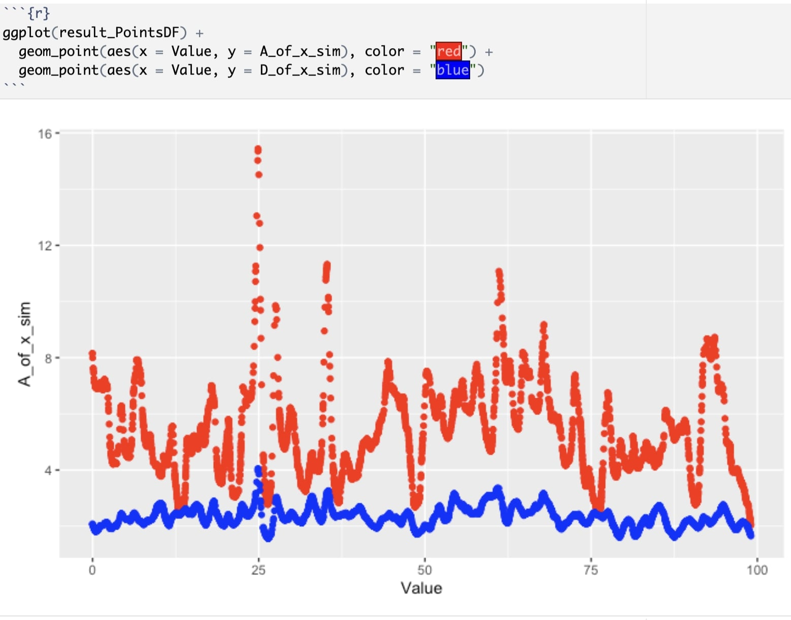
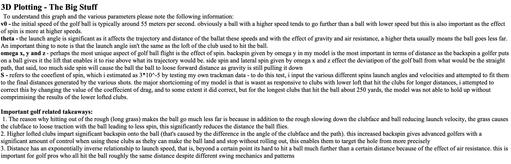

Computational Modeling
Financial Market Behavior Modeling
Applied theoretical physics and stochastic differential equations, incorporating research from Non-parametric estimation of Stochastic Differential Equations from stationary time-series, to develop a computational model for financial market behavior — improving forecasts of asset price dynamics and volatility.
Strengthened my skills in mathematical modeling, data wrangling, and algorithm implementation, gaining experience in quantitative analysis and stochastic processes. For any references, please reach out to Professor Sarah Marzen.


Golf Ball Flight Analysis in Maple & MATLAB
This was a pet project I created to model golf ball flight. I golf a bit and was fiddling around with Maple, and decided to build a dynamic golf flight simulator — launch speed, launch angle, spin and drag all exposed as parameters you can sweep.
Alongside, find some of the key golf-related findings as well as an example ball flight — similar to what I see on the course, on a good day!

Developed and deployed a predictive machine learning model to assess bankruptcy risk for partner loan providers, optimizing financial risk management through data-driven insights.
Solely responsible for the coding and implementation of the pipeline, from data preprocessing and feature engineering to model selection, validation, and deployment in a production-ready format.
Gained expertise in financial data analysis using machine learning models, and cross-functional collaboration, strengthening my ability to build scalable ML-driven solutions for real-world business challenges.
Took a data-driven approach to the Bigfoot mystery, analyzing reported sightings across U.S. counties to build a statistical model predicting where the legendary creature is most likely to be found.
Explored the relationship between sightings and socio-economic factors, using Poisson regression, machine learning, and logit models to separate myth from statistical patterns — turns out, Bigfoot loves the Pacific Northwest. Or maybe the people of the PNW love Bigfoot?